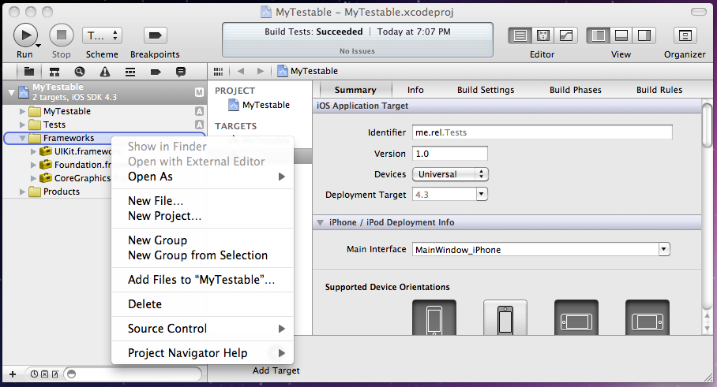

Installing in iOS (Xcode 4)
To use GHUnit in your project, you’ll need to create and configure a test target.
Create Test Target
- You’ll want to create a separate Test target. Select the project file for your app in the Project Navigator. From there, select the Add Target + symbol at the bottom of the window.

- Select iOS, Application, Window-based Application. Select Next.

- Name it Tests or something similar. Select Finish. If there is a checkbox labeled Use Automatic Reference Counting then ensure that it is checked.

Configure the Test Target
Link your Test Target against QuartzCore Framework.
Download and copy the GHUnitIOS.framework to your project. Command click on Frameworks in the Project Navigator and select: Add Files to “MyTestable”. (This should automatically add GHUnitIOS.framework to your Link Binary With Libraries Build Phase for the Tests target.)

- Select GHUnitIOS.framework and make sure the only the Tests target is selected.

- We want to enable use of Objective-C categories, which isn’t enabled for static libraries by default. In the Tests target, Build Settings, under Other Linker Flags, add -ObjC and -all_load.

- Select and delete the files from the existing Tests folder. Leave the Supporting Files folder. GHUnit will provide the application delegate below.

- In Tests folder, in Supporting Files, main.m, replace the last argument of UIApplicationMain with
@"GHUnitIOSAppDelegate". Remove the #import “AppDelegate.h” if present.

- Select the Tests target, iPhone Simulator configuration:

- Hit Run, and you’ll hopefully see the test application running (but without any tests). If you receive an error about _CACurrentMediaTime then please ensure that QuartzCore.framework has been added to *Linked Frameworks and Libraries in your new test target’s “Summary” page.

Now you can create and run tests!